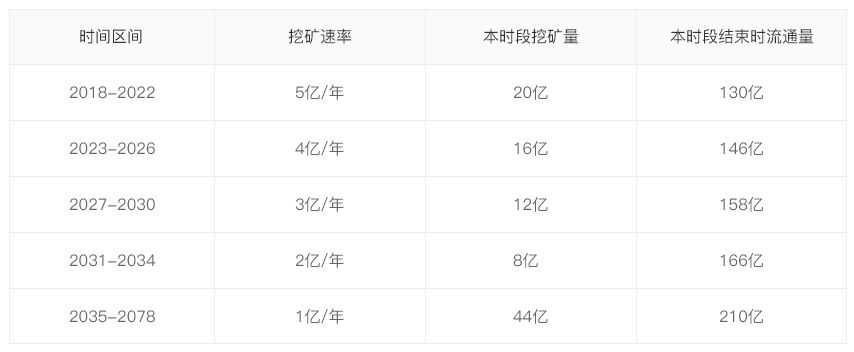

- Home
- Whitepaper
- Roadmap
- Q&A
-
CN

在 CODE Network 发展的第⼀个阶段，将不作为⼀个独⽴运⾏的区块链开发，⽽是作为⼀个 DAPP 运⾏在 Ethereum, EOS 等区块链操作系统平台之上。但 CODE 将提供⼀系列协议、 ⼯具和基础性服务，使⽤户可以基于 CODE 创建和运营分布式协作项⽬组织（Distributed Colloborative Organization, DCO），因此 CODE 可以被视为是⼀组由中间件 （middleware）和应⽤（App）组成的平台。CODE 与其之上的各种 DCO 以及相关社群、 交易机构、组织和服务共同构成 CODE ⽣态。
分布式协作组织（DCO）⾸先是⼀个以价值创造为⽬的的⼈类协作组织。以价值创造为⽬ 的，就要求 DCO 内的成员具有共同的⼯作⽬标，以价值创造为⽬的进⾏强协作，这显然与松 耦合和弱连接的⽹络信息分享社区，或者基于兴趣和⼈际关系的社交⽹络⼤相径庭。所以⼀ 个软件开发团队是 DCO，⼀个电影剧本创作团队是 DCO，⽽⼀个仅仅在⼀起议论电影的在 线论坛，和⼀个仅仅在⼀起赞美某个明星的在线粉丝会，都不是 DCO。
强协作是需要激励的。在 DCO 当中，每⼀个成员都拥有退出的绝对⾃由，因此 DCO 为了提 供⾜够的激励，会发⾏⾃⼰的创作性分布式协作组织主通证（Distributed Organization Token, DCOT）作为主要的价值和激励载体，并设定尽可能公平⾼效的分配机制和交换规 则，以使项⽬获得成功。
去中⼼化⾃治组织（Decentralized Autonomous Organization，DAO）是在智能合约技术兴 起之后，早由 Dan Larimer 提出的⼀种区块链上的⼈类组织形式（初提出时称为 DAC）。顾名思义，DAO 有两个突出的特点，第⼀是去中⼼化，组织内的成员以币权做为唯 ⼀的权利凭证；第⼆是⾃动化治理，组织基于⼀系列智能合约⾃动化运⾏。
我们认为 DAO 是区块链上⼀种⾮常重要的组织形式，但不是唯⼀的形式。DCO 并不要求组 织必须去中⼼，也并不要求组织内的权利⼀定要以币权为凭证，更不要求⽤智能合约取代⼈ 为的治理机制。DCO 将这些决策交给组织⾃⼰来做，⽽只是提供必要的⼯具，帮助组织建⽴ 和运⾏。例如，⼀个 DCO 可以采取中⼼化的⽅式来开发，由⼀个⼈作为终决策者。另⼀个 DCO 可以以 DCOT 的份额作为投票权的分配机制。DCO 还可以发⾏⼀种特别的 HOT 代表 决策权，甚⾄可以进⾏决策权的有价转让。DCO 协作⽅式可以是多样的，只要能够让跨地 域、跨边界的⼈们在互联⽹上结成强协作体，就是 DCO。
由以上描述可知，DAO 也是⼀种 DCO。
在传统开源软件的模式下，由于缺乏激励，超过 90% 的开源项⽬创建之后没有发布任何可⽤ 版本便夭折，超过 96% 的开源项⽬在发布若⼲版本之后就停⽌维护。这使得很多软件开发⾏ 为回归到商业项⽬开发模式，由公司组织软件团队进⾏集中式开发，然后开源。这偏离了开 源软件运动的初衷，弱化了分布式协作开发的优势。
在 CODE Network 中的每⼀个软件开发的 DCO 都有⾃⼰的通证（DCOT）。DCOT 在⼀个 DCO 中扮演着⾄关重要的⻆⾊，也导致 DCO 与开源软件团队存在巨⼤差别。DCO 中由于
有通证作为激励机制和权益分配凭证，将⽐开源软件团队有着更强的协作能⼒，更稳定和可 持续的发展前景。此外，DCO 将⽤户也视为组织成员，因此⽤户的购买⾏为实际上也可以被作为对组织的投 资，⽤户可以获得代表该 DCO 的权益通证（DCOT），从⽽分享该 DCO 的⻓期发展成果。
每⼀个 DCO 都需要定义和发⾏⾃⼰的组织内主通证，称之为 DCO Token，简称 DCOT。 例如，若开发 PostgreSQL 数据库的团队转变为⼀个 DCO，则他们可以发⾏ PSQL.CODE 作为⾃⼰的组织内主通证，⽽开发 EOS 的团队可以发⾏ EOS.CODE 作为⾃⼰的组织内主通 证。
DCOT 的存在和应⽤是 DCO 区别于传统⽹上组织的根本不同点。根据不同 DCO 的设定， DCOT 可以是功能性的（utility token），也可以是权益性的（security token），还可以是 混合型的。DCO ⾃⾏决定 DCOT 的具体⽤途和权益。
DCOT 还是 DCO 获取挖矿收益的权益基础。
⾼阶通证（Higher Order Token, HOT）是由 DCO 基于⾃⼰的 DCOT 定义的加密数字凭 证。
在对通证的研究中，我们发现，通证是分阶的。例如，在 CODE Network 中，CODE 币是零 阶本位通证，⽽各 DCO 的 DCOT，是基于 CODE 币定义的，以 CODE 币定价的，因此是 ⼀阶通证。相应的，如果以 DCOT 为基础定义更⾼层的通证，就可以被称为⾼阶通证。
所谓“⾼阶”，是指 HOT 的价格是对应的基层 DCOT 价格的函数，或者说 HOT 是 DCOT 的衍⽣品。事实上在具体应⽤中，HOT 可以代表 DCO 中的各种权益、商品和资格。
HOT 具有丰富的⽤途，例如：
* ⼀个 DCO 可以将解决某个问题的悬赏作为⼀个 HOT 发布，开发者解决该问题，就可以 获得这个 HOT，并选择⾃⼰认为合适的时间出售
* DCO 还可以建⽴某类代表决策投票权的 HOT，这样可以将政治权利从经济权利中剥离出 来。
* 再⽐如 DCO 可以出售以 DCOT 计价的限量版数字徽章 ⼀个 DCO 可以将⾃⼰的某个在线软件服务（如6个⽉服务、12个⽉服务）的使⽤权表达 为 HOT，⽤户购买这个 HOT
* DCO 还可以将若⼲优惠和权益打包在⼀个聚合 HOT 中，⽤户可以⼀次性购买，享受其 中的服务，并且可以进⾏流转售卖。
HOT 的交易会形成 CODE Network 中⼀个活跃的市场。
CODE Network 是⾯向软件开发垂直领域的通证发⾏平台，为 DCO 提供了远超过以太坊、 EOS等通⽤区块链平台的服务，其中包括但不限于：
* ⼀个 DCO 可以将解决某个问题的悬赏作为⼀个 HOT 发布，开发者解决该问题，就可以 获得这个 HOT，并选择⾃⼰认为合适的时间出售
* 简单易⽤的通证创建发⾏功能，丰富的通证和经济系统模板，让 DCO “⼀键发证”
* 通过使⽤类似“闪电⽹络“的技术，CODE Network 上的通证创建、⽀付、转移等操作零 ⼿续费，⽽且效率极⾼，⼤多数操作在秒级时间内即可完成
* 独创的⾼阶通证（HOT）概念和技术，⽀持丰富的应⽤场景。同样功能在以太坊、EOS 中需要开发复杂的智能合约才能完成
* 在 2078 年前，DCO 通过出售 DCOT 获得 CODE 币后，可以获得挖矿收益
* 通过灵活的应⽤ DCOT 和 HOT，DCO 在CODE Network 上可以轻松完成创建、管理、 决策、交易、融资、激励、分配等复杂的经济和治理⾏为
CODE币是整个 CODE Network当中的数字本位币，CODE Network中每⼀个 DCO 都必须 ⽆条件的接受 CODE 币作为交易中介、价值计量和存储的基本货币。
CODE是产业基础币，主要是在全球开发者社群内扮演数字本位币的⻆⾊，并且作为基本单位 ⽀持其上的⾼阶通证、智能合约和 DAPPs。换⾔之，在 CODE ⽣态圈内，只能⽤ CODE 购 买⾼阶通证、在智能合约和 DAPP 中作为价值计量单位。
CODE 在交易市场上可与⽐特币、以太币和其他加密数字货币进⾏交易。
因此，如果⼀个⽤户想把 CODE 平台上的⾼阶通证卖掉，获得⽐特币或以太币，他需要⾸先 将通证出售获取 CODE 币，然后将 CODE 币兑换成⽐特币或以太币。
CODE 币共发⾏ 210 亿枚，其中2018 年⾄ 2078 年全部发⾏完毕，并且永不增发。发⾏⽅ 案如下表：
CODE 通过⾃主研发的 POS 的⽅式进⾏挖矿。
因此当 CODE 经济体快速发展时，CODE 币将倾向于通缩。在此情况下，CODE 基⾦管理委 员会可进⾏⼀部分逆回购，增加市场流动性。
CODE 发⾏总量为210亿个，其中60亿个⽤于私募、市场营销、社区建设、团队激励等事 宜，50亿个作为基⾦储备，100亿个将在2018 - 2078年之间挖矿产⽣。
其中私募 30 亿个，占 CODE 发⾏总额的 14.3%，计划募集资⾦ 30,000 ETH。
具体分配⽅案请参⻅第四章。
在 2018 ⾄ 2078 年间，新的 CODE 币通过挖矿发⾏。挖矿以某⼀个固定时⻓（通过底层链 区块⾼度确定）为周期进⾏。
CODE 币的挖矿主体是 DCO 。加⼊ CODE 的全体 DCO 以其所拥有的 CODE 储备为依据进 ⾏挖矿。
CODE 代币的主要⽤途是购买 CODE Network 上 DCO 发布的其他通证，以及提供的产品和 服务。其中各 DCO 发⾏的 DCOT 只能由 CODE 购买。
CODE Network ⿎励 DCO 将⾃⼰的⼀切产品和服务都表达为通证，但并⾮强制要求，因此 各 DCO 仍然可以将⾃⼰的产品和服务以 CODE 币标价后出售。
典型的场景如：
* ⽤户⽤ CODE 购买某 DCO 发⾏的 DCOT 或 HOT
* ⽤户⽤ CODE 订购某 DCO 提供的 Web Services
* ⽤户⽤ CODE 购买某 DCO 提供的电⼦书
* ⽤户⽤ CODE 打赏某位作者或问题回复者
* DCO ⽤ CODE 竞争挖矿权
* ⽤户持有某 DCOT，欲换成另⼀种 DCOT，通过 CODE 作为交易媒介
CODE 是整个 CODE Network ⽣态的基础货币，发挥着全⽅位的交易媒介、价值存储和价值 计量的功能。
CODE 基⾦管理委员会在整个 CODE Network ⽣态中发挥治理机构的作⽤。CODE 基⾦会 拥有 50 亿 CODE 代币的起始资本，初处于锁定状态，从 2018 年⾄ 2027 年每年解冻 5 亿 CODE，为 CODE 基⾦管理委员会提供公开市场操作资⾦。CODE 基⾦管理委员会的每⼀ 批资⾦使⽤和市场操作，都将公开账⽬，并提供审计接⼝和⼯具，接受全体 DCO 和⽤户监督 和审计。⼤额度操作将提前公布。
CODE 基⾦管理委员会由 CODE 核⼼团队、DCO 代表组成，定期进⾏⼈员调整。
* 2018 年 3 ⽉前完成⽩⽪书和区块链加速中间件的开发（已完成）
* 2018 年 3 ⽉完成系统功能初步设计，发布 DCO，并开发 DCO 基础智能合约
* 2018 年 3 ⽉底前完成私募
* 2018 年 5 ⽉完成基于 Ethereum 的测试版，开始对接 Github 和 CSDN
* ⽤户⽤ CODE 订购某 DCO 提供的 Web Services
* 2018 年 9 ⽉完成基于 EOS 的测试版
* 2018 年 10 ⽉ DCO 批量⼊驻，开始挖矿和空投
* 2019 年 6 ⽉⾃主研发的⾼阶通证⽀持系统上线
* 2019 年 12 ⽉ CODE Network 1.0 正式发布